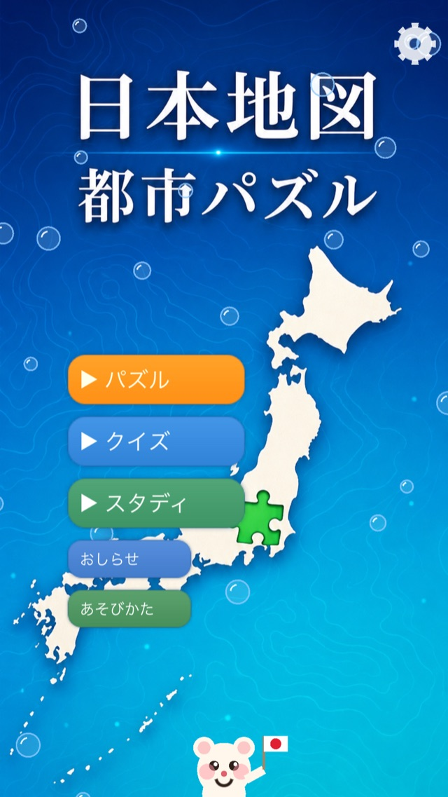
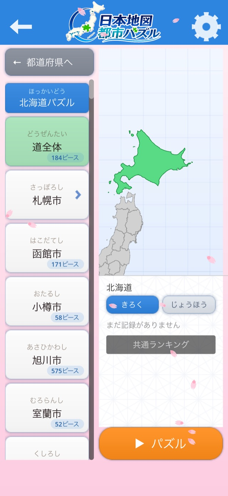
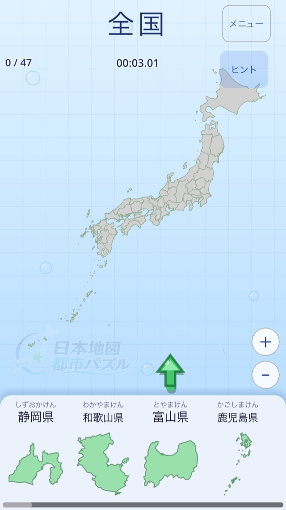
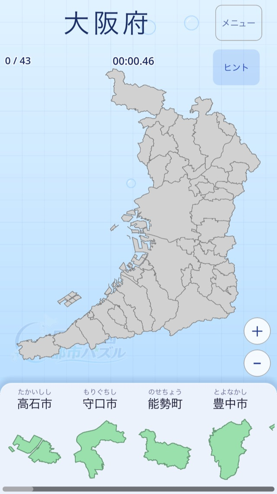
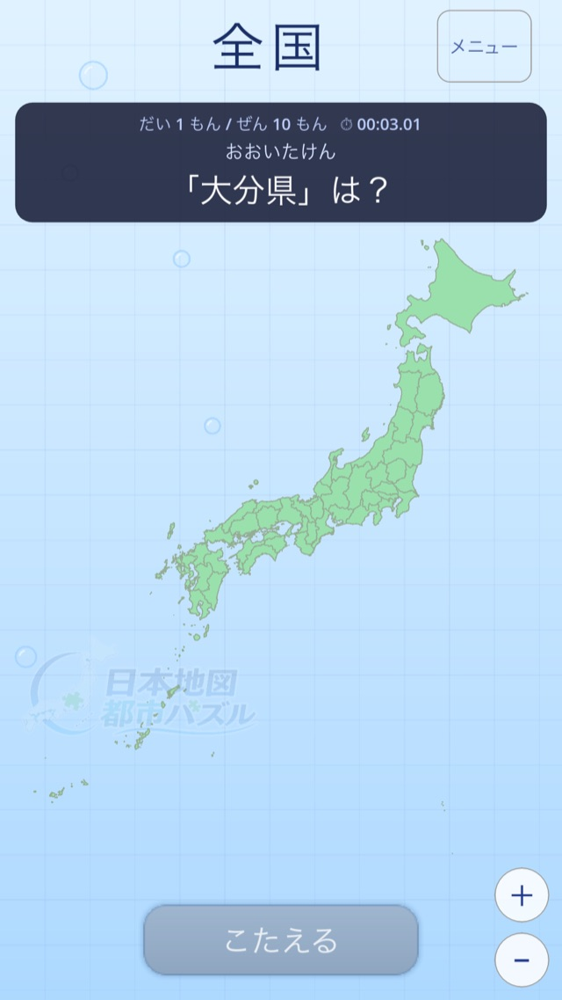
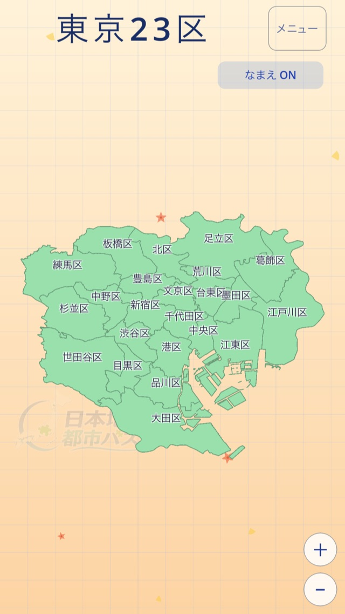
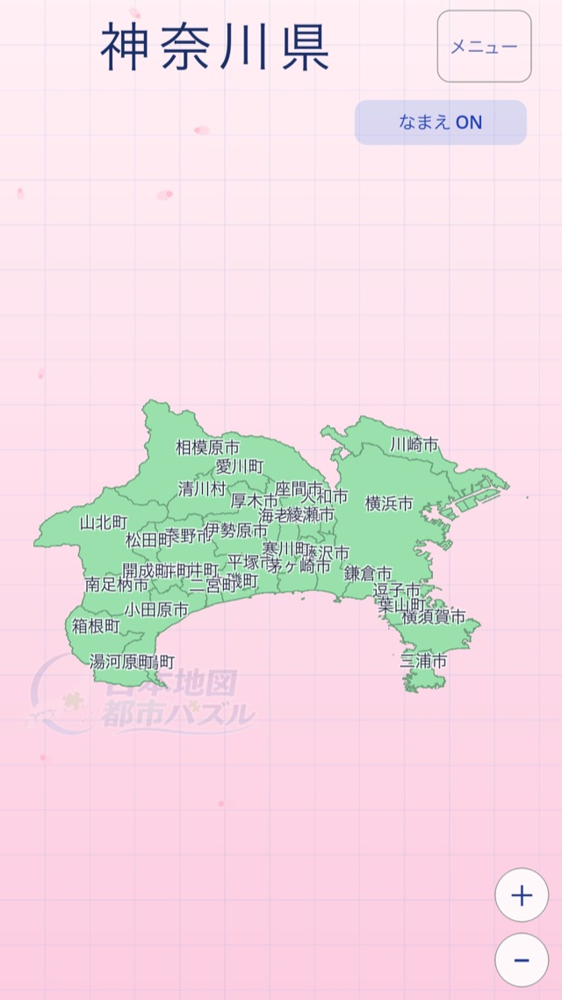
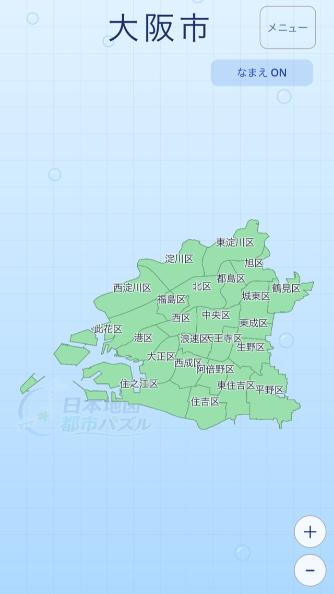
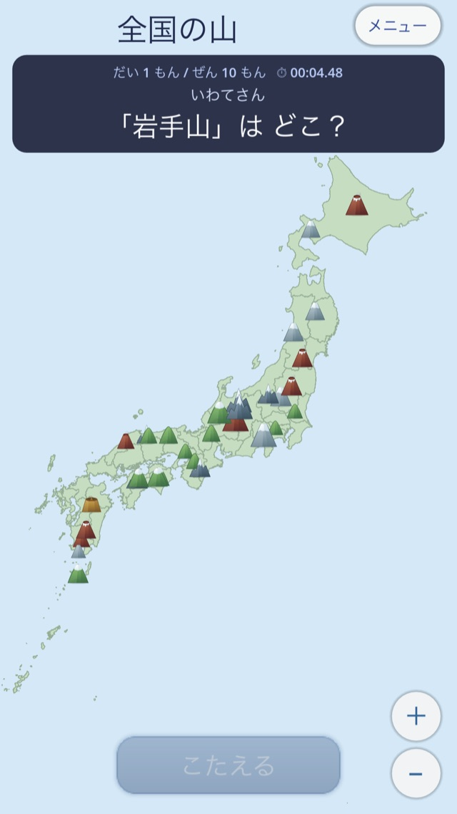
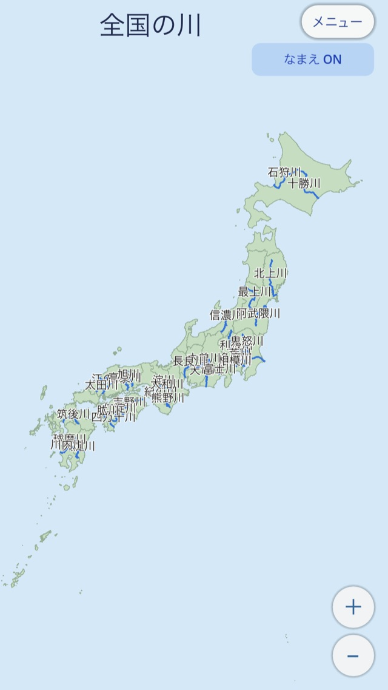

🗾 日本全国、まるごと収録
1,700+マップ
北海道のすみずみから沖縄まで。
市区町村のひとつひとつが、パズルになる。



3つの遊び方
気分やレベルに合わせて、同じ地図を3通りに楽しめます。

🧩 パズル
ピースを正しい場所へ。完成めざしてタイムアタック。

❓ クイズ
「ここはどこ？」全5問。名前と場所が自然に身につく。

📖 スタディ
自分のペースで。タップで読み上げ＆豆知識も。
4つのカテゴリで、遊びは12通りに広がる。




全国の市まで、ぜんぶ遊べる。
全国＋47都道府県＋政令指定都市の区。
まずは、この62マップ。


↑ ここに並ぶのは62枚。すごいのは、この"中身"です。
一枚ずつの市区町村がそれぞれ個別マップになり、合わせて1,700以上に。山・川モードもさらに別途収録。
全国の「市」も、一つひとつがパズル。
都道府県も、市も、山も、川も。あわせて1,700以上のマップで、日本がまるごと遊べる。
充実の機能
遊びごたえも、学びやすさも。
- 全国の市まるごと
全国の市が一つひとつ個別マップに。日本のすみずみまで遊べる。 - 政令指定都市の区まで
大都市は区の単位でこまかく遊べる。 - 山・川モード
日本の名峰・有名な河川もパズル/クイズ/スタディで。 - 圧倒的な作り込み
北海道はなんと184ピース。 - 記録とランキング
Game Centerで全国のプレイヤーとタイムを競える。 - クラウドで記録復元
機種変・再インストールでも進捗そのまま。 - スタディの豆知識
地名の読み・由来など、学びがふくらむ。
スクリーンショット
→ 横にスクロールできます


こんな方に
📚 小学生の地理学習に・中学受験対策に
👨👩👧 親子でいっしょに、クイズで盛り上がる
🗾 大人の学び直し・ご当地ファンにも